Malt
Rötlicher, geschichteter Gneis
Höhe insgesamt: 220 cm
Größte Breite: 85 cm
Größte Dicke: 60 cm
Runenhöhe: ca. 10 cmRuneninschrift:
waagrecht:
Wer ist in dem Gefäß das glitzert? Die Sonne ist in dem Feuergefäß. Vifrød hat gemacht "afr" für seinen Großvater - gemalt hier drin. Kolfinn hat hier drin Spaßrunen und Ewigkeitsrunen
senkrecht:
Thor! Thor! Thor! heraus, heraus, heraus Billing (Name oder Ort) Thor hat sich darin versteckt. So wird es ewig versteckt. Es wird ewig versteckt sein.


Inschrift-oben-rot-nachgezeichnet

Inschrift-unten-rot-nachgezeichnet

8 - Malt - Letztes Update 31.07.2025
Listennummer : DK SJy 38
Navidaten: 55.451762 / 9.037739 oder: Sønderskovgårdvej 2, 6650 Brørup, Museet på Sønderskov
Transliteration:
(Vertikale Linien) sua ai : titultitul | fuþąrkhniastbmlR
(Horizontale Linien) huaR is i : alisti ąsa : huaR is (:) | uifrþuR : karþi : afr aft asini fauþr | kul:finR : fal(s) : taitirunąR : u | (a)iuinrunąR : sulialta : huaR : ? | utu : tuuut bilikikR : tuR ra(k)(i) | (t)(u)(l)i
Dies ist ein Luftfoto vom 13.05.2023 von Skråfoto - Lizenz: CC BY 4.0 - das das Museet på Sønderskov zeigt (Bild zugeschnitten). Skråfoto ist eine Webanwendung, die von Klimadatastyrelsen weltweit kostenlos bereitgestellt wird - Freie Nutzung unter Beachtung der Lizenz: CC BY 4.0 Die Aufnahmen werden seit 2017 alle zwei Jahre erneuert und neben einer Senkrechtaufnahme wird ein Schrägbild aus jeder Himmelsrichtung angeboten, das man über eine Adresssuche aufrufen kann.
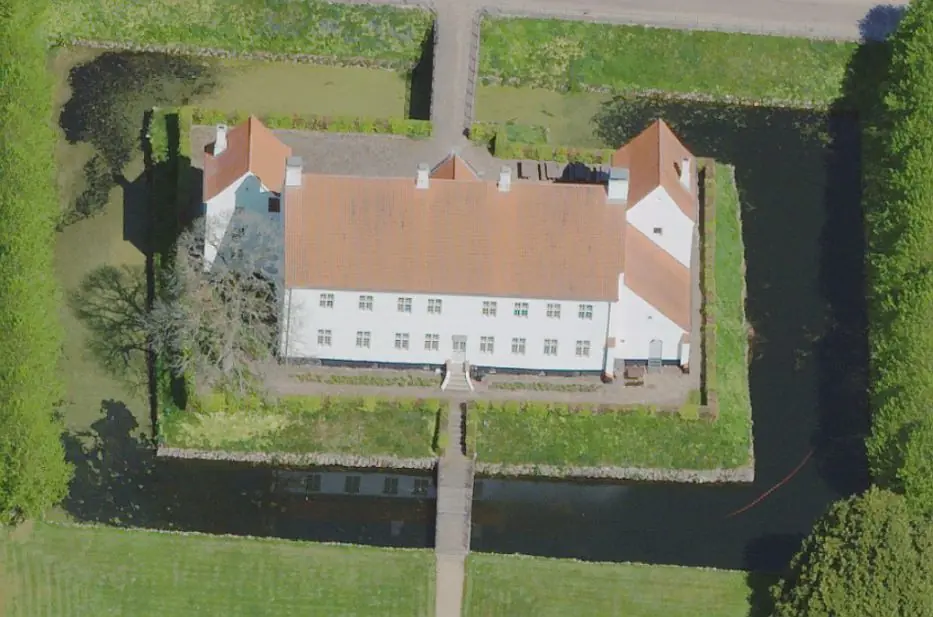
Dieser monumentale
Runenstein -
mit einem Gewicht von 2405 kg
(andere Quellen sprechen von 3500 kg)
- lag auf einem Feld der
Landwirte Tove und Hans Sørensen, zwischen den
Bauernhöfen St. Vindiggård
und
Ågaard, bei
Malt, einer kleinen Ortschaft dicht bei der
Königs Au
- GPS-Koordinaten:
55.434093, 9.091054.
Dann wurde durch den damaligen Pfarrer Agner Frandsen (*1938, seit 1971 bis 2003 Pfarrer der Malt Gemeinde) aus Askov umgehend das Egnsmuseet in Vejen informiert. Dieses ist im ca. 4 km Luftlinie entfernten, denkmalgeschützten Hauptgebäude des Herrenhauses Sønderskov südlich von Brørup untergebracht. Man kam anschließend zu einer ersten Besichtigung mit dem Museumsinspektor/Archäologe Svend Aage Knudsen vor Ort zusammen. Noch am gleichen Nachmittag wurde das "Rigsantikvarens arkæologiske Sekretariat" beim Nationalmuseum in Kopenhagen informiert. Aufgrund des bevorstehenden Wochenendes wurde das Eintreffen der Runologin Marie Stoklund (*11.08.1934 - 03.09.2021, dänische Runologin) vor Ort für den kommenden Montag vereinbart.
An der Fundstelle des Malt-Steins, die ca. 30 km von der Mündung der Kongeå in die Nordsee entfernt liegt, wurden unmittelbar nach dessen Fund Ausgrabungen auf einem 5 x 5 m großen Feld durchgeführt. Dabei wurde festgestellt, dass der Runenstein ursprünglich aufrecht am selben Platz stand, wo er später über Jahrhunderte lag. Er stand auf einer ca. 3,5 Meter hohen Terrasse am Nordufer der Kongeå, nur 70 Meter entfernt vom Flusslauf. Irgendwann fiel er um, oder wurde umgestoßen. Anfang des 19. Jahrhunderts wurde die Region mit Heide kultiviert. Die Bauern haben wohl immer wieder um den Stein herum gegraben, worüber er immer weiter in die Erde niedersank - ca. 75-80 cm laut den Ausgrabungen. Von einem Grab wurde keine Spur gefunden.
Der Malt-Stein stand mit dem Rücken zum Fluss. Nur vier Meter östlich des Steins wurden Spuren eines in Nord-Süd-Richtung verlaufenden Hohlwegs gefunden. Dieser führte direkt zum Fluss hinunter und war wahrscheinlich vorhanden, als der Stein aufgestellt wurde.
Die von Norden kommenden Menschen konnten somit die Inschrift des Malt-Steins sehen und lesen, bevor sie gleich danach die Kongeå überquerten. Hier befand sich vermutlich eine Brücke oder Flussfurt. 300 Meter weiter östlich wurden brückenähnliche Fundamente in Form von großen Steinen und eingerammten Pfählen gefunden.
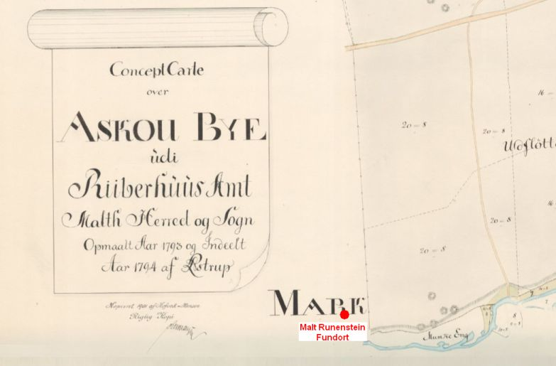
Ausschnitt einer Karte von 1794 - Quelle: https://historiskekort.dk - mit dem von mir eingezeichneten Fundort (GPS-Koordinaten: 55.434093, 9.091054). Rechts daneben 5 eingezeichnete Grabhügel. - Erkenntnis aus: Runestenen fra Malt - Svend Aage Knudsen - S. 6 - 1991 (Sonderdruck aus "Årbog for Kunst- og Kulturhistorie - Mark og Montre - Udgivet af Ribe Amts Museumsråd").
Marie Stoklund (*11.08.1934 - 03.09.2021, dänische Runologin) war dann am Montag 06. April 1987 am Fundort und begann im Beisein von Museumsinspektor/Archäologe Svend Aage Knudsen mit ihren ersten Untersuchungen. Hinzugezogen wurde auch der Leiter des Konservierungszentrums in Ølgod, Elmer Fabech, und der Steinrestaurator Leif Vognsen. Sie fanden keinerlei Farbspuren in der Runeninschrift. Ihrem Bericht zufolge handelt es sich um einen in der letzten Eiszeit von Schweden, Region Dalarne - nordwestlich von Stockholm, herbeigeschleiften Steinblock.
Der Runologin kam aber zunächst auch die Idee einer modernen Fälschung in den Sinn. Man kam dabei auch auf die Idee, dass ca. 5 km nördlich das Internat von Askov liegt, an dem der bekannte Philologe Marius Kristensen (*27.04.1869 - 02.11.1941, Dr. phil., Hochschullehrer, Dänischer Sprachforscher - link-LIVES)
 Bildquelle:
Denstoredanske.lex - Lizenz:
Public Domain
Bildquelle:
Denstoredanske.lex - Lizenz:
Public Domain
bis 1927 als Lehrer gearbeitet hat. Er lehrte auch über die Runensschrift. Im Jahr 1921 war bei einer Restaurierung der Kirche von Gørlev (Stein 1) der bis dahin einzige Runenstein Dänemarks mit einem (identischen) vollständigen "Futhark" gefunden worden. Die Kenntnis dieser Inschrift, Runenwissen, gepaart mit handwerklichem Geschick hätten zu einer Fälschung führen können, wurde ihm unterstellt.
Zwischenzeitlich durchgeführte Untersuchungen bestätigen jedoch die Echtheit, an der die Runologen heute keinen Zweifel mehr haben. So schreibt Lisbeth M. Imer (*1973, Runologin am Nationalmuseum Kopenhagen) 2016 in ihrem Buch "Danmarks Runesten - en fortælling" auf der S. 64 - übersetzt: ...aber die Wissenschaftler sind sich jetzt einig, dass es ein echter Runenstein ist.).
Der Runenstein wurde nun 1989 als "danefæ" (Herausragender Fund) deklariert und der Finder hat eine saftige Belohnung erhalten.
Die Runeninschrift, mit 153 Zeichen im jüngeren Futhark eine der längsten Inschriften Dänemarks, wurde bislang nicht zweifelsfrei gedeutet. Es gibt inzwischen eine Vielzahl von Deutungsversuchen, die teilweise extrem voneinander abweichen (Siehe Literaturhinweise).
Die Inschrift besteht aus einem senkrechten (A1 und A 2) und einem waagrechten (B1 bis B6) Teil. Die teilweise waagrechte Anordung ist sicherlich der Steinstruktur geschuldet, da den Stein ein tiefer waagrechter Riss prägt. Außer vom großen Jellingstein kennt man dies sonst nicht.
Der senkrechte Teil besteht aus zwei Runenlinien. Möglicherweise fiel die Inschrift kürzer als erwartet aus, da links vom senkrechten Teil zwei leere Runenbänder vorhanden sind. Die rechte der beiden senkrechten Linien enthält ein vollständiges jüngeres Futhark (von unten nach oben gelesen), das mit dem des Gørlevsteins 1/Seeland identisch ist. Außerdem befindet sich rechts von der waagrechten Inschrift die Ritzung eines kleinen stilisierten Menschengesichtes, das eine Ähnlichkeit mit der Christusdarstellung auf dem berühmten Runenstein Harald Blauzahns in Jelling aufweist. Die Inschrift ist deutlich zu lesen.
Der waagrechte Teil besteht aus fünf vollen und ganz unten rechts einer unvollständigen Linie und stellt den unteren Teil der Inschrift dar.
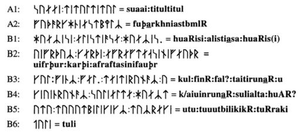
Quelle: Thomas Birkmann - Von Ågedal bis Malt: die skandinavischen Runeninschriften vom Ende des 5. bis Ende des 9. Jahrhunderts - 1995 - S. 361.
Herr Birkmann führt ergänzend dazu aus: "Diese (o.a.) Lesung darf als weitestgehend gesichert gelten... Aufgrund der Runenformen ist der Maltstein in den Zeitraum 850 bis 950 zu datieren...Große Partien des Textes auf dem Maltstein müssen zumindest als dunkel gelten, trotz der bisher vorliegenden Interpretationsvorschläge von Thuesen 1990, Braunmüller 1991 und 1992, Samplonius 1992, Stoklund 1994 und Grønvik 1994; klar sind eigentlich nur die Zeilen A2, B2 und z.T. B3, A1 hat vermutlich rein magische Funktion."
Die im linken Frame aufgeführte Übersetzung geht auf einen Vorschlag der Philologin Karen Thuesen aus Uppsala/Schweden zurück. Der Stein wird von ihr in die frühe Wikingerzeit 800 bis 900 n. Chr. datiert.
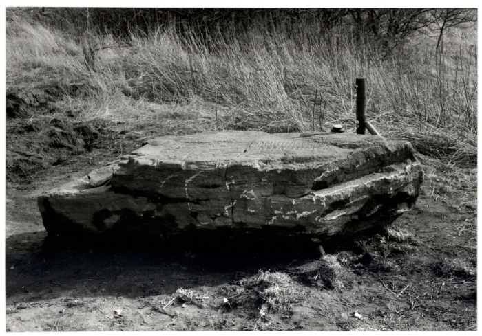
Foto von Marie Stoklund (*11.08.1934 - 03.09.2021, dänische Runologin am dänischen Nationalmuseum) kurz nach dem Fund aus dem Jahr 1987.
Der digitalen Sammlung des Nationalmuseums Kopenhagen entnommen - Lizenz: CC-BY-SA
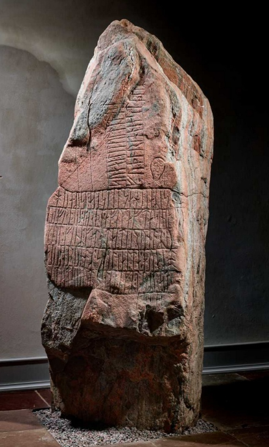
Im Vorfeld zu dem 2016 erschienenen Buch von Lisbeth M. Imer (*1973, Runologin am Nationalmuseum Kopenhagen) "Danmarks Runesten - en fortælling" reiste sie mit dem Fotografen Roberto Fortuna zur Bestandsaufnahme durch die Lande. Dieses Foto des Runensteins wurde am 11.11.2014 aufgenommen.
Der digitalen Sammlung des Nationalmuseums Kopenhagen entnommen - Lizenz: CC-BY-SA
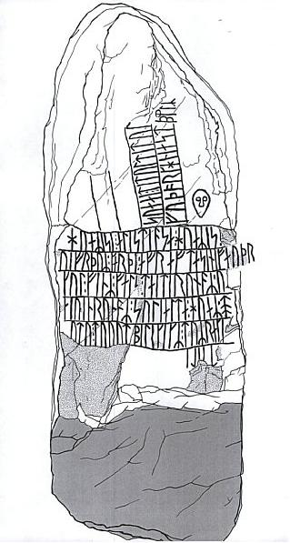
Diese Zeichnung findet sich in der dänischen Runen Datenbank und stammt von Svend Aage Knudsen.
Eine weitere Deutung von Kurt Braunmüller aus Hamburg, der den Stein in die 1. Hälfte des 11. Jahrhunderts datiert, kommt zu einem völlig anderen Ergebnis:
waagrecht:
An jeden, der diesen Stein zu Gesicht bekommt / sieht, an jeden!
Vifrid-Thor machte diesen Gedenkstein für [seinen] Vater nach dessen Hinrichtung¹ / gewaltsamem Tod.
[Jeder, der (diesen Gedenkstein)] findet [und ihn] beschädigt, [den] sollen die Runen überlisten / betrügen, neuere (?) Freundschaftsrunen.
[Die] Sonne verfolgt jeden!
(?) - (magische Anrufung des Kriegsgottes Týr unter Verwendung des Zeichens für Auerochse) - mir fehlt ein Acker; schwerer Verlust, (?).
senkrecht:
Schlüpfrige Stelle! - (zweimaliger, beschwörender Anruf der) kleinen Sonne.
fuþąrkhniastbmlR (vollständiges jüngeres Futhark)
¹Denkbar wäre hier auch der Tod in einem Kampf
Diese Inschriftdeutung stammt aus der Abhandlung von Kurt Braunmüller "Der Maltstein - Versuch einer Deutung" - siehe Literaturhinweise.
Über den facebook Auftritt des Museet Sønderskov kann man einige Fotos / Karten abrufen, die unmittelbar nach der Entdeckung (Begutachtung Fundobjekt, Ausgrabung am Fundort, Abtransport per Kranwagen, Aufrichtung im Museum) gefertigt wurden - vom 10.01.2018.
Auf Anfrage wurde mir am 04.04.2022 durch Lars Grundvad (Museumsinspektør, arkæolog cand.mag.) vom Museet Sønderskov die Erlaubnis zur Wiedergabe der nachfolgenden Fotos auf meiner Webseite erteilt - Urheberrecht liegt beim Museet Sønderskov.
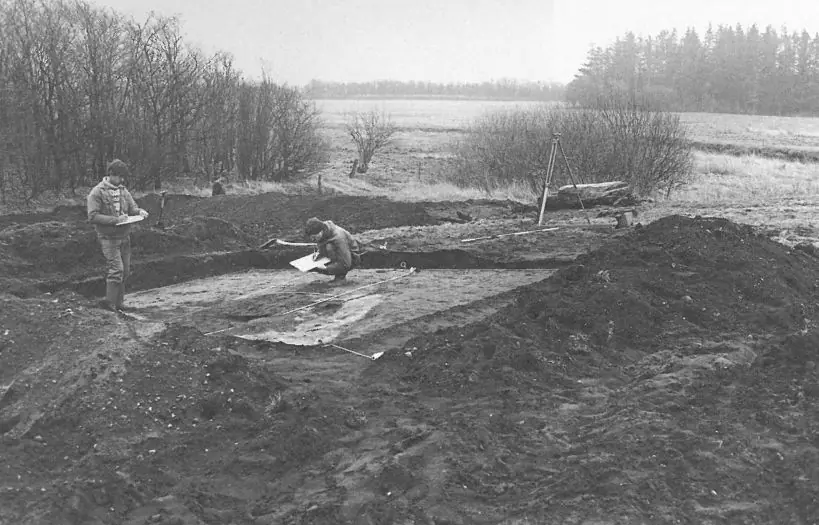
Bereits am Tag nach der Entdeckung wurde auf dem Gelände mit einer kleinen Ausgrabung begonnen. Obwohl das Feld klein war, waren die Ergebnisse spannend, denn es gelang, die Stelle zu finden, an der der Runenstein ursprünglich gestanden hatte, sowie ein Pfostenloch, das möglicherweise im Zusammenhang mit der Errichtung des Steins gegraben wurde. Der Runenstein liegt hier noch im Hintergrund.
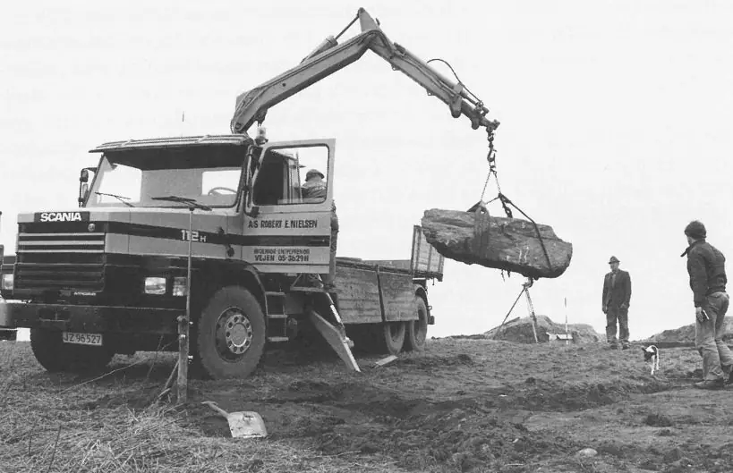
Nach Beendigung der Ausgrabung wurde der Stein dann geborgen, da die Inschrift mit der Zeit verwittern würde. Man verbrachte ihn zunächst in das Magazin des Museums.
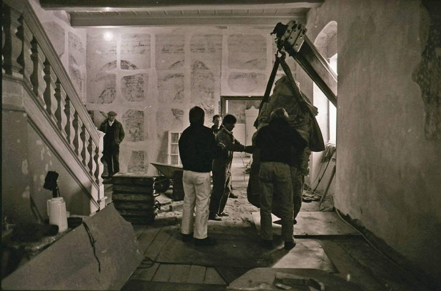
Nachdem die Inschrift für echt erklärt und die Zeichenstudien abgeschlossen waren, wurde beschlossen, den Stein im Foyer des Herrenhof Sønderskov auszustellen. Da sich das Haus noch in einer grundlegenden Renovierungsphase befand, nahm man einfach ein Fenster heraus und hiefte den tonnenschweren Stein am 30.04.1991 mit einem Kran in die Ausstellung.
Einige Fotos meiner 2013er Wikingertour (Malt - 20.08.2013) habe ich hier aufbereitet:
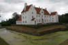 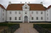 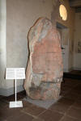 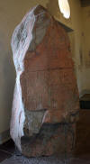 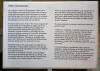 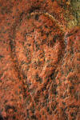


Die Infos zu diesem Runenstein aus der dänischen Runendatenbank finden sich hier.
Kein Eintrag in "Fund og Fortidsminder" vorhanden.
Über die Webseite "Runes" - ein Forschungsprojekt der Akademie zu Göttingen - kann man diese Informationen zum Runenstein von Malt abrufen.
Literaturhinweise:
Svend Age Knudsen - 1988 - Omstridt runesten - Skalk 2 - 1988 - S. 3ff.
Karen Thuesen - 1988 - Tolkningen - Skalk 2 - 1988 - S. 7ff.
Marie Stoklund - 1989 - Nytt om runer 3 - 1988 (1989) - S. 4ff. / Nytt om runer 4 - 1989 - S. 5 - Jeweils kurze Mitteilungen zum Neufund des Runensteins
Karen Thuesen - 1990 - Maltstenen. En runologisk undersøgelse af den sydjyske Maltindskrift. Københavns Universitet.
Svend Aage Knudsen - 1991 - Runestenen fra Malt sogn nu på museum. Mark og Montre 1991, S. 3-23.
Kurt Braunmüller - 1992 - Der Maltstein. Versuch einer Deutung - Frühmittelalterliche Studien 26 - S. 149-164
Runesteinen fra Malt i Jylland - 1992 - Ottar Grønvik / Arkiv för nordisk filologi
Malt-stenen, en alfabetmagisk indskrift fra tidlig vikingetid - 1993 - Poul Erik Mørup / Fra Ribe Amt
Thomas Birkmann - 1995 - Von Ågedal bis Malt - Die skandinavischen Runeninschriften vom Ende des 5. bis Ende des 9. Jahrhunderts
Malt-Stein ein Runenstein aus der Wikingerzeit - Infos zum Runenstein von der Homepage des Kongeå-WanderwegsMichael Lerche Nielsen - Runetræf ved Malt-stenen - Rapport fra et besøg på Sønderskov - Museumsavisen Nr. 34, März 2001, 21 Jahrgang - S. 20-26
Poul Erik Mørup - Om mindeskriften på Maltstenen - Museumsavisen Nr. 35, November 2001, 21 Jahrgang - S. 10-12
Gunhild Øeby Nielsen - De danske runestens oprindelige plads - KUML 2005 - S. 121-144 - darin S. 127ff.
Gunhild Øeby Nielsen - Runesten og deres fundforhold - 2007 - Nr. 2 auf der S. 199
Lars Heltoft - Maltstenens tekst - Hvordan dæmonen uddrives - Danske Studier 2017 - S. 27-100 - umfangreiche Literaturhinweise auf den S. 94-99
2016 wurde zwischen Harreby und Fæsted Dänemarks größter Goldschatz aus der Wikingerzeit gefunden. Am 01. Juni 2016 tauchte dabei der erste goldene Armring bei der Suche des Metalldetektor Suchteams "Rainbow Power" aus der Erde auf. Der Schatz war zeitweise im Sønderskov Museum ausgestellt. (Bis Ende Dezember 2021). Seit 01.02.2024 kann man im Museum eine Replik des Schatzfundes bewundern.
Der Schatz beinhaltet über 300 Einzelstücke und wiegt dabei knapp 1,5 kg in Gold und ca. 130 Gramm in Silber. Für den außergewöhnlichen Fund erhielten die drei Teammitglieder vom Nationalmuseum in Kopenhagen einen Finderlohn in Höhe von 1.066.600 kroner (= ca. 143.283 ) ausgezahlt!
Literaturhinweis:
Fæstedskatten - Danmarks største Guldskat fra vikingetiden - Lars Grundvad, Nick Schaadt og Bo Ejstrud, 2017 - 249,00 kr.